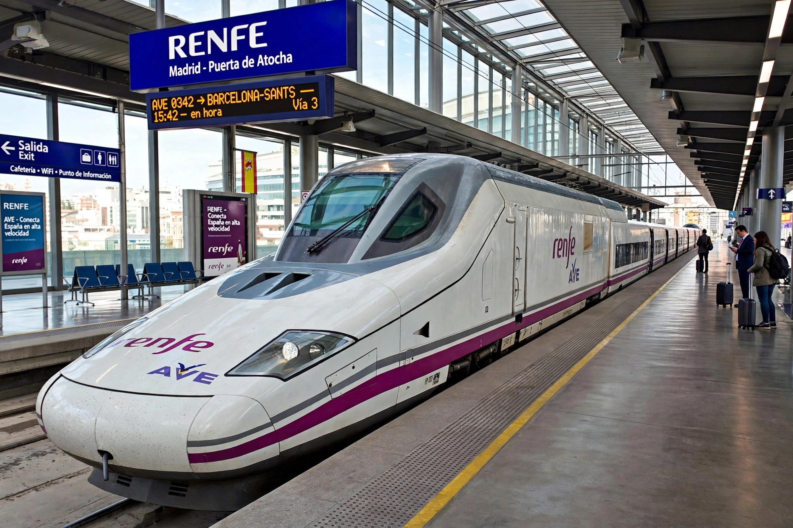

| Renfe Operadora | |
|---|---|
| Founded | 24 January 1941 (original); 1 January 2005 (current form) |
| Headquarters | Madrid, Spain |
| Owner | Government of Spain |
| Services | Passenger rail: AVE, Avlo, Alvia, Cercanías, Media Distancia |
Renfe Operadora, branded simply as Renfe, is Spain's state-owned passenger railway operator. It was created in 2005 when the historic Renfe (founded 1941 as Red Nacional de los Ferrocarriles Españoles) was split, with infrastructure passing to Adif.
Renfe operates AVE high-speed trains on one of the world's largest high-speed networks, the low-cost Avlo brand, long-distance Alvia and Intercity services, regional Media Distancia trains, and Cercanías commuter networks in major cities. Freight operations were separated into Renfe Mercancías.
Since 2021 Renfe has faced competition on high-speed routes from Ouigo España and Iryo, and itself operates cross-border services into France following the end of its Elipsos joint venture with SNCF.